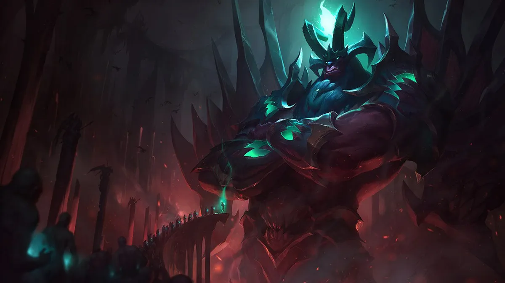

El parche 26.10 aterriza en los servidores en vivo el 13 de mayo y Riot viene con el foco puesto en dos frentes: bajar a los campeones que dominaron el meta de la Season 2 Pandemonium y darle vida a los que no arrancaron. Acá está el preview completo.
Buffs: Galio, Ambessa, Wukong y Zeri
BUFF — Galio: El guardián de Demacia venía siendo ignorado en el competitive y en soloQ desde el rework de ítems. Riot le sube números para intentar traerlo de vuelta al mid y al support.
BUFF — Ambessa: A pesar del hype de la serie de animación, Ambessa nunca terminó de asentarse en el meta. Los buffs apuntan a hacerla más amenazante en sus trades de pelea.
BUFF — Wukong: El mono de Ionia necesitaba amor. Se espera que los cambios le devuelvan viabilidad en top y en la jungla.
BUFF — Zeri: Con el nerf que recibió Ashe este parche, Zeri tiene una ventana para volver al meta de marksman. Riot lo aprovecha con algunos números al alza.
Nerfs: Zed, Naafiri, Ashe y Shyvana
NERF — Zed: Sigue siendo uno de los asesinos más fuertes del meta, especialmente en manos de los jugadores de mid. Los números exactos aún no se publicaron pero el preview confirma los cambios.
NERF — Naafiri: La asesina de los Darkin tuvo un parche muy fuerte y acumuló demasiado en las manos de los jugadores que la dominan. Cae este parche.
NERF — Ashe: El ADC más jugado de la Season 2 recibe su primer nerf significativo. Esto abre la puerta para que Zeri y otros marksmen recuperen terreno.
NERF — Shyvana: Estuvo dominando jungla en casi todos los niveles de juego. Baja en el 26.10.
Ajuste: Lee Sin
Lee Sin no entra ni como buff ni como nerf puro — es un ajuste de modernización. Se le nerfa el W y el E en números pero se le mejora la movilidad en el dash. El objetivo de Riot es que su curva de habilidad sea más expresiva sin hacer que la versión "promedio" del personaje sea un problema.
Items: Lichbane y Stormraider's suben, Deathfire's Touch y Gluttonous Greaves bajan
BUFF — Lichbane: El ítem favorito de los magos con daño on-hit vuelve a ser más atractivo.
BUFF — Stormraider's Surge: La runa de movilidad para pelea recibe amor, lo que podría abrir builds más agresivas para bruisers.
NERF — Deathfire's Touch: La runa de daño sostenido que explotó con el parche de la temporada 2 finalmente cae. Era inevitable.
NERF — Gluttonous Greaves: Las botas con Omnivamp fueron demasiado buenas para demasiados campeones. Se recortan.
Arena: 6 equipos de 3 jugadores
El cambio más experimental del parche: Arena pasa a ser 6 equipos de 3 jugadores. Hasta ahora el modo se jugaba en equipos de 2. El cambio agrega una dimensión completamente nueva — coordinar 3 personas en tiempo real dentro del caos del modo es un desafío distinto, y abre posibilidades de composiciones que antes no existían. Riot aclaró que es un experimento y que van a medir si el formato gusta antes de decidir si se queda.
El parche 26.10 sale el martes 13 de mayo. Cubrimos las notas completas cuando estén disponibles.